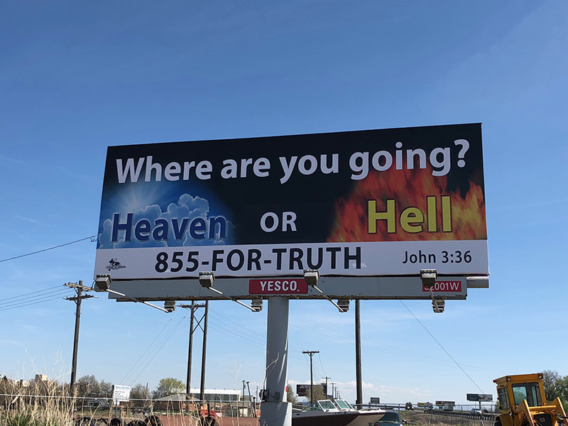

I had originally planned to post (one of) my posts about patriarchy today, but a conversation I had inspired me to post this instead; I’ll start a series on gender and sexuality soon and I’ll put in that post then. So what’s this post about? It’s about… what it’s all about. That is, why be a Christian? I’m sure you know what the standard answer from lots of Christians is… Raise your hand if you’ve ever seen a billboard like this:

🙋 I have! Lots of Christians will tell you that you should be afraid of Hell, and that’s why you should become a Christian, to be saved from that nightmare. The existence or nature of Hell can be a contentious issue between various strands of Christianity, and that all deserves its very own post, so I’m not going deep into that here. I want to explore the question, “Apart of any concerns about ‘the afterlife’, why someone should become a Christian?” My answer is, people should be Christians because it’s good. Let me explain, because for those reading with little exposure, or who have only been exposed to “fire and brimstone” types, this might not be obvious.
Fire and brimstone Christians stress the “depravity of man”, basically wanting to make sure everyone knows how worthless they are, as well as making sure you’re mega afraid and think God wants to torture you because you’re trash. On the one hand, I understand where they’re coming from; just like everyone else, I’ve done some dirt in my life, and in comparison to how God calls us to treat people, I’m… well, you could say I’m not great. (Remember, God’s commands add up to nothing more and nothing less than the radical proposition that we need to love others as much as ourselves (Romans 13:8-10)… really think about wanting comfort, success, or whatever else for every single human at least as much as you want those things for yourself). On the other hand… at least the way they talk about this, it just seems to lead to a lot of shame and self-hate. That seems like bad fruit to me (Matthew 7:15-20).
Instead, Christianity is about “repentance that leads to salvation and leaves no regret”, not “sorrow bring[ing] death” (2 Corinthians 7:10). So, let’s think about this a little differently. God loves you. (Romans 8:38-39, 1 John 3:1). Put that first and foremost. Yep! God made you in His image (Genesis 1:27), you’re His child, and He loves you (1 John 3:1). He doesn’t love you because you’re perfect; no one is perfect (Romans 3:23), and God knows that and loves you anyway. He loves you no matter what (Romans 8:38-39). Nothing you can do will destroy God’s love for you! And, guess what? God loves every other single human too. Is it starting to make sense now that the most important commands, according to Jesus, are to love God and to love people (Matthew 22:36-39)? Does it make sense that we can distill down all of God’s commands for how we’re supposed to treat others into “love others as yourself” (Romans 13:8-10)?
We are God’s children (1 John 3:1), all of us (Galatians 3:28). Christianity—The Way—is about turning away from selfishness and your flaws to treat others with love. What does Christ say? “Follow me” (Matthew 16:24). Follow Him where? Which is The way? To love God and to love people (Matthew 22:36-39); to help the hungry, the thirsty, the naked, the sick, the strangers and foreigners, and those in prison (Matthew 25:34-36); to give to the needy, fix our own issues before judging others, to love even our enemies, and to be merciful, meek, and peacemakers (Matthew 5-7); to put ourselves last and others first (Matthew 20:25-28; Mark 9:35). This is The Way.
I hope now you can see why, apart from any concerns of the afterlife, Christianity, real, loving Christianity (1 John 4:8), is a good and righteous path. Don’t just let someone scare you into saying a certain set of magic words because you’re afraid of Hell; be a Christian because it’s beautiful to love and to help others, because you want to show others the love of God. Recognizing God’s love for you, and using that recognition to turn away from selfishness and turn toward love and service to others? That’s “repentance that leads to salvation and leaves no regret”.